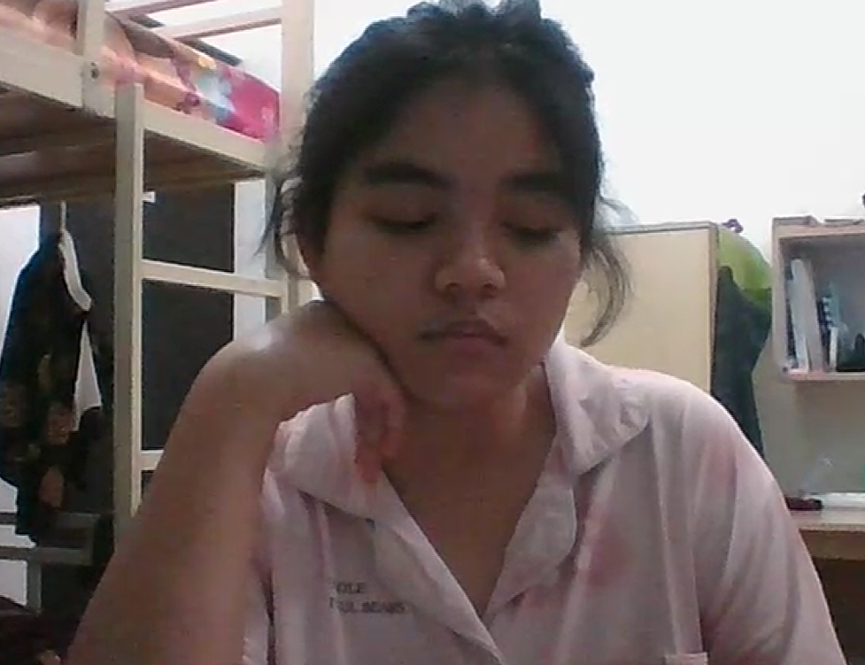

Dida u want to be my valentine?
>:(
halo dida this is me noi, disini aku cuma mau bilang makasi ya udah pernah memberi aku semua kebaikan yg kamu punya di dunia ini, aku sangat sangat berterimakasih dengan kamu yg selama ini selalu memberi aku kesempatan untuk berdiri di samping kamu sampai titik ini. aku benar benar bersyukur dengan keberadaan kamu yg slalu mau menerima aku di samping kamu, u know i started enjoying life because of you? let look back from before i met u, before i met u im just a boy that doesnt have an objective in life.. not even enjoying life.. like every second of it only darkness that accompany me when I'm alone, yeaaaa im like that before so hopeless haha. BUTTTTTTT selama berjalan nya waktu, tuhan mempertemukan aku dengan salah satu manusia ciptaanNya yang menurut ku salah satu manusiaan ciptaannya yg menurutku dari pada di sebut manusia lebih baik di aku sebut bidadari, ciptaan tuhan yg satu ini adalah kamu, perempuan baik yg pada awalnya aku tidak kenal apa apa tentang dia XD. tapi setelah berjalan nya waktu setelah banyak kejadian dan drama drama sampai lah kita pada hari ini, hari yang dimana aku yg dulu tidak akan berpikir atau mengira akan bisa di capai dan aku punya.. di sini hari ini di kehidupan ini, aku memiliki perempuan baik, perempuan hebat, perempuan kuat, perempuan cantik, dan tentunya perempuan penyayang, perempuan yg selalu menemani ku kemana mana dimana mana, selalu melewati apapun bersama berantem bahagia semuanya, walaupun kadang suka dia sendiri pergi.. XD tapi aku panggil lagi dia balik ujung nya hehe aku jujur tidak tau harus bilang apa lagi di sini, tapi yang aku benar benar aku mau beri tahu ke kamu adalah aku adalah laki laki yang sangat benar benar menyayangi dida, laki laki yang akan selalu menemani dida dimana pun itu juga, apapun itu yg terjadi aku akan selalu menemani dida. mungkin segini saja dari ku hari ini, aku sayang dida.
Dida, my heart's pulse doth echo solely for thee. From the first moment our fates entwined, mine existence hath transformed into a melodious ode of love, joy, and hope. Thy presence illuminates my path through the shadowed eves, the warmth that banishes my trepidations, and the love that doth fill mine very essence. Absent thy light, I am naught but an empty vessel, adrift in the abyss of being. Thou art my all, the reason for mine awakening with each dawn, and my steadfast mooring in this boundless sea of life. I cannot envision a realm devoid of thy smile, thy laughter, thy gentle touch. Thou art my beloved, my existence, my eternal. Without thee, I am but a fragment, yet with thee, I am made whole. My affection for thee surpasses the confines of mere words, and I shall honor thee until the final dusk of time.